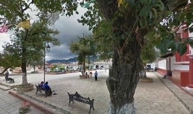
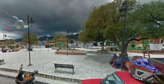
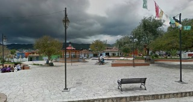
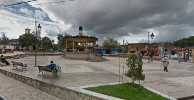
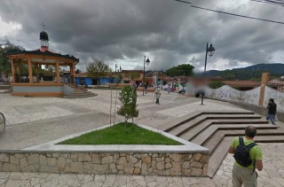

Construida junto con el templo del cerrilo en 1737. En ese entoces esta plazuela no sólo daba cita a los habitantes del barrillo el cerrillo, sino también a los de mexicanos y cuxtitali para celebrar al señor de la transfiguración el 6 de agosto de cada año.
Se encuentra ubicada en la Calle Comitán y Avenida Belisario Dominguez.
Si usted se encuentra ubicado en la plaza de la paz viendo de frente hacia la catedral puede caminar hacia su izquierda como referencia encontrará la Zapateria Catedral y Frente a este el Restaurant VIA VAI entre estos dos lugares encontrará el andador eclesiástico camine sobre el andador hasta llegar a la plazuela de Santo Domingo usted encontrará la calle Escuadron 201 de vuelta a su derecha y camine una cuadra como si fuese rodeando la plazuela, al llegar a la esquina de vuelta a la derecha y encontrará la avenida General Utrilla, continue caminando una cuadra y al llegar a la esquina encontrará la calle comitán de vuelta a la derecha y camine una cuadra para llegar a la plazuela.
En el lugar usted puede realizar actividades como:
* Visita a iglesias
* Asistencia a fiesta popular





posicione el mouse sobre las imágenes